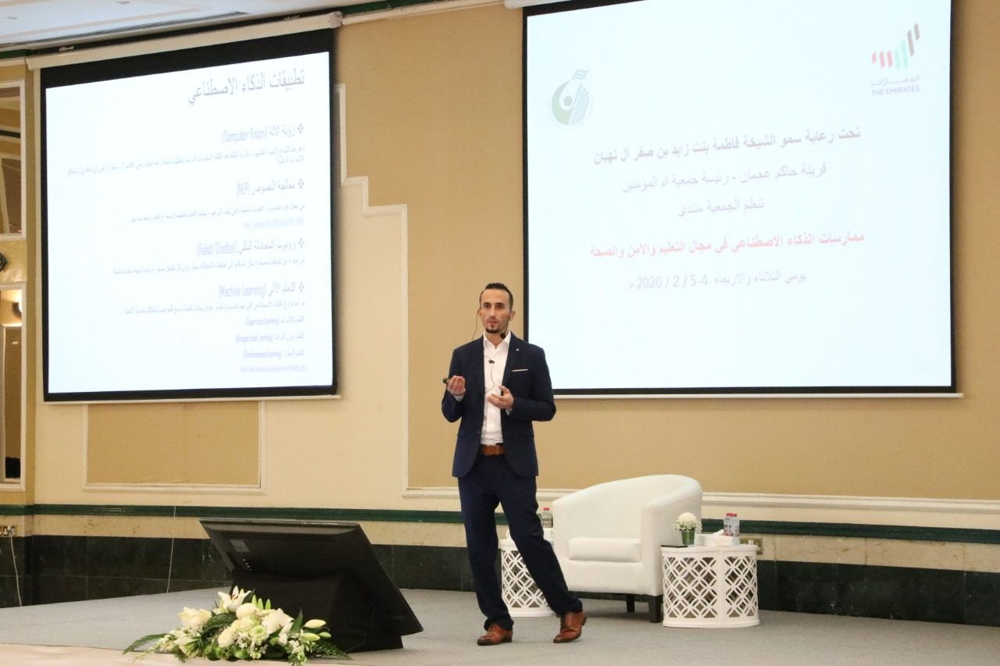
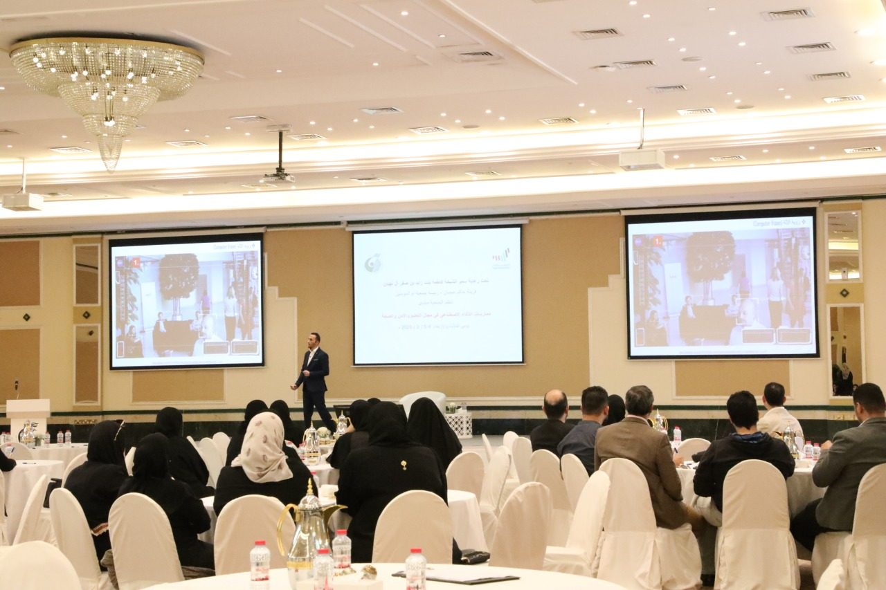

Capability arrived first. Accountability has to catch up.
AI systems now grade medical images, answer customers, and draft decisions. The tools to explain them, correct them, and prove they behave have not kept pace. Inverse AI exists to close that gap: research first, and product once the claims have earned it.
Three questions every serious AI deployment ends up asking.
Why did it decide that?
And does the explanation point at real evidence, or at an artefact?
Can we change it without starting over?
And did the change do what we asked, at a cost we can accept?
Will it keep behaving once it’s live?
And can we show a regulator, a clinician, or a customer that it has?
Today those questions belong to different tools and different teams, and some go unanswered. Explanation libraries produce maps that nobody scores. Steering results are reported against weak baselines. Monitoring tracks accuracy, not reasons. Inverse AI treats them as one problem: a decision, its evidence, any change made to it, and proof that the change held.
The standard we hold our own work to.
Measure the explanation
A map is a hypothesis until it is scored against where the evidence should be.
Beat the strong alternative
Beating the untouched model is a start. Beating a strong baseline is a result.
Count the cost
Every change is paid for in capability, compute, or latency. We report that cost next to the gain.
Say what is unproven
A claim tested on text models and untested on vision models is labelled that way. So is this website.
A decade from research niche to legal expectation.
The tools for looking inside models improved quickly, and regulation followed. What’s still missing is a standard for knowing when an explanation or an intervention actually works.
-
2016
LIME, and the year black boxes made the news
Ribeiro, Singh and Guestrin publish LIME, a way to explain any classifier locally. The same year, ProPublica’s analysis of the COMPAS risk score puts algorithmic bias on the front page. arXiv:1602.04938
-
2017
SHAP gives attribution a theory
Lundberg and Lee ground feature importance in Shapley values. DARPA’s Explainable AI program begins funding interpretable machine learning. arXiv:1705.07874
-
2018
Explanation enters the law
GDPR takes effect. Its rules on automated decision-making move explanation from a research topic to a compliance question.
-
2020
Circuits
Olah and colleagues’ “Zoom In” shows that vision networks contain readable circuits, the start of modern mechanistic interpretability. Distill
-
2021
Regulation is proposed
The European Commission proposes the AI Act: risk tiers, documentation, transparency, and human oversight for high-risk systems.
-
2022
Models can be edited directly
ROME shows that a factual association inside a language model can be located and rewritten. Months later, ChatGPT puts fluent and sometimes fabricated answers in front of millions. arXiv:2202.05262
-
2023
Steering at runtime
Activation addition and representation engineering show that behaviour such as honesty or sentiment can be shifted at inference time, without retraining. arXiv:2310.01405
-
2024
Features at scale, and the Act becomes law
Anthropic extracts millions of interpretable features from a production model and steers it by amplifying one. The EU AI Act enters into force in August. Scaling Monosemanticity
-
2025
Tracing the computation
Attribution graphs trace intermediate steps inside a production language model. EU AI Act obligations for general-purpose models begin to apply. Transformer Circuits
-
2026
Inverse AI’s first public study
Our mask-aware benchmark of Grad-CAM and SHAP for diabetic retinopathy is published with IEEE. The steering account for language and vision-language models is in preparation. Read it
Saeed Thabit
Founder, Inverse AI · Doctoral researcher, United Arab Emirates University, College of Computing and Artificial Intelligence
Saeed’s research asks when an AI explanation, or an intervention, can be trusted, from retinal photographs to large language and vision-language models.
Inverse AI needs three kinds of experience at once: interpretability research, an understanding of how models behave when they are steered, and the engineering discipline to run models in production. Saeed’s record covers all three. He has a published explainable-AI study in medical imaging and active doctoral research on steering, and he co-authored a paper on MLOps that has been cited more than 240 times, building on a background in software development leadership.
- NowDoctoral research at UAEU on representation steering in large language and vision-language models
- 2026Mask-aware benchmarking of Grad-CAM and SHAP for diabetic retinopathy, IEEE, with the INDUCE lab at UAEU
- 2024Perspective chapter on human emotion, Advances in Sentiment Analysis, IntechOpen
- 2020Applying DevOps practices of continuous automation for machine learning, Information (MDPI)
- 2020Led the workshop “AI and Blockchain Basics” for parents and teachers at the forum “AI Practices in Education, Security and Health”, Umm Al Moumineen Association, Ajman
- 2019Tweet sentiment analysis for cloud providers, Journal of Data Analysis and Information Processing


Leading the workshop “AI and Blockchain Basics” for parents and teachers, on the second day of the forum “AI Practices in Education, Security and Health”. The forum was organised by the Umm Al Moumineen Association under the patronage of H.H. Sheikha Fatima bint Zayed bin Saqr Al Nahyan. Ajman, 5 February 2020.
If this is the problem you’re working on, let’s talk.
Investors, clinical and industry partners, and researchers are all welcome.